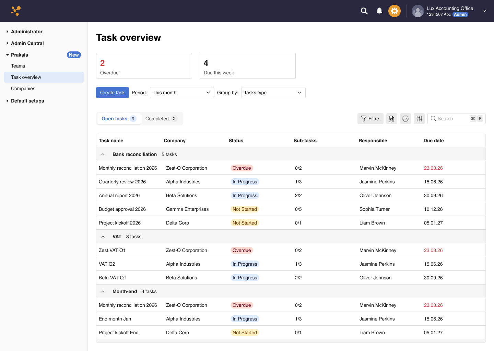
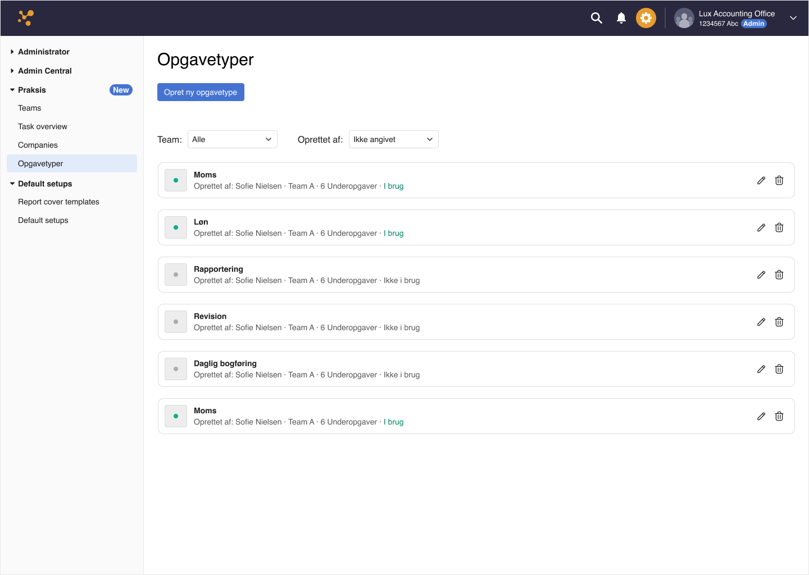

Momentum update, commercial strategy, and what the next 90 days look like for the Task Management product.
The Task Management MVP is nearing completion. Every feature has been rigorously designed to maximise time saved for Accounting Officers.
We have officially secured a 3-month extension for the project — giving us the runway to refine the product, stabilise development, and execute a stronger go-to-market.
Weekly co-design sessions and AI-assisted workflows using Claude have accelerated design to the point where it is no longer a bottleneck.
With design moving at high speed, development has become the primary constraint. The team is actively aligning velocity.
To ensure code quality, some tasks move into the next DP. The extension absorbs this spillover without compromising the final output.
Accounting Officers get a single, structured view of all client tasks — grouped by type, filtered by period, with live status and due dates.

Task Overview — the primary AO workspace

Opgavetyper — task type management by team
Practice managers can configure task types per team — defining sub-tasks, toggling active status, and maintaining a clean taxonomy across the firm.
Parallel to product builds, we are formalising our Marketing and Sales track — shifting from "building features" to "selling the story" of AO efficiency.
Every minute saved on admin is a minute an Accounting Officer can spend on the advice that grows a client's business.
Initial pricing hit the mark for large-scale firms but created a barrier for smaller practices.
A scalable pricing architecture that fluctuates based on accounting volume — accessible for SMBs, profitable at enterprise.
Align development velocity with our high-speed design output. Reduce spillover and increase delivery predictability per DP.
Define a clear work hierarchy across all tracks — design, development, and commercial — to maintain a birds-eye view of progress.
Transition from "building features" to "selling the story." Ship scalable pricing architecture and begin go-to-market execution.
The foundation is solid. The extension is secured. The story is ready to tell.